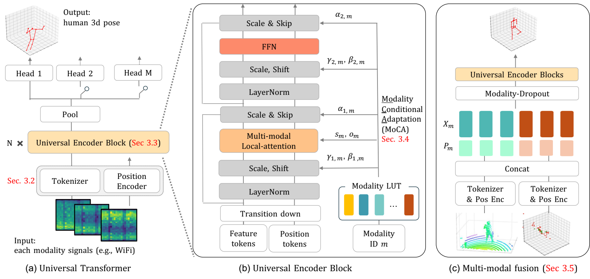
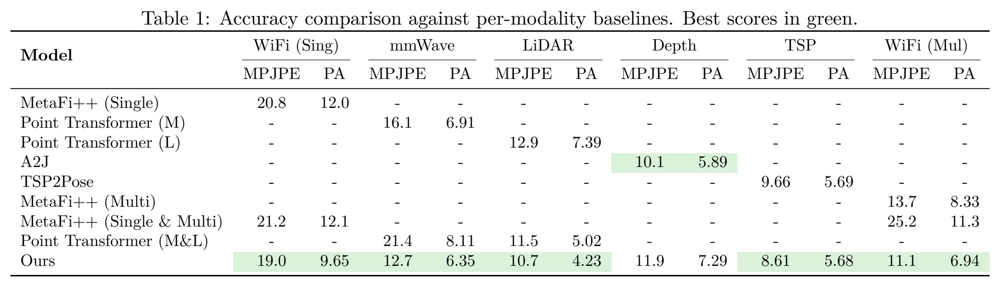
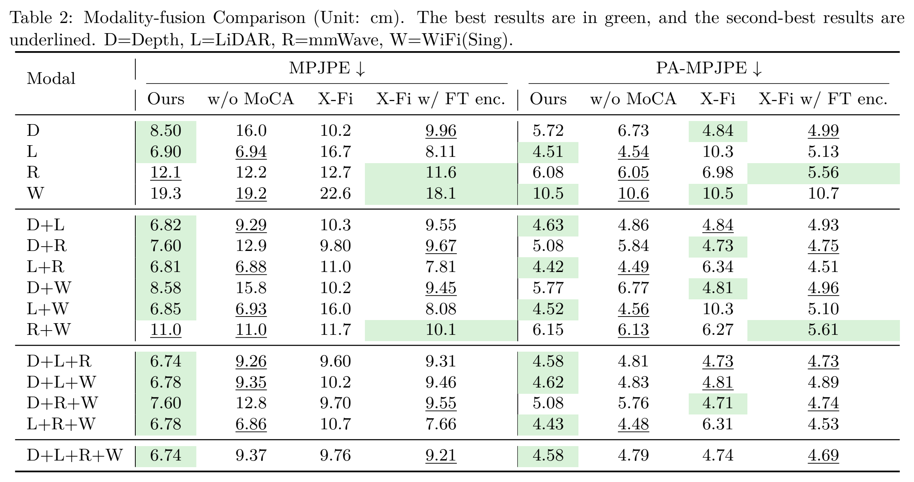
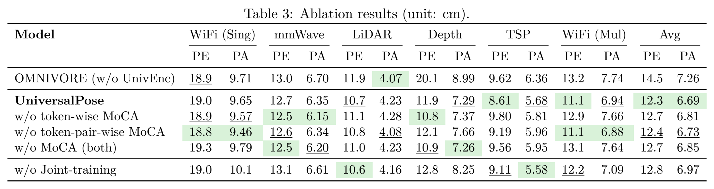
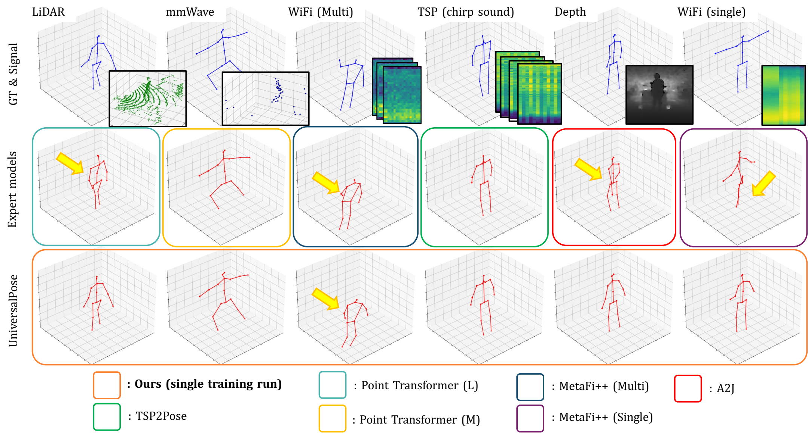
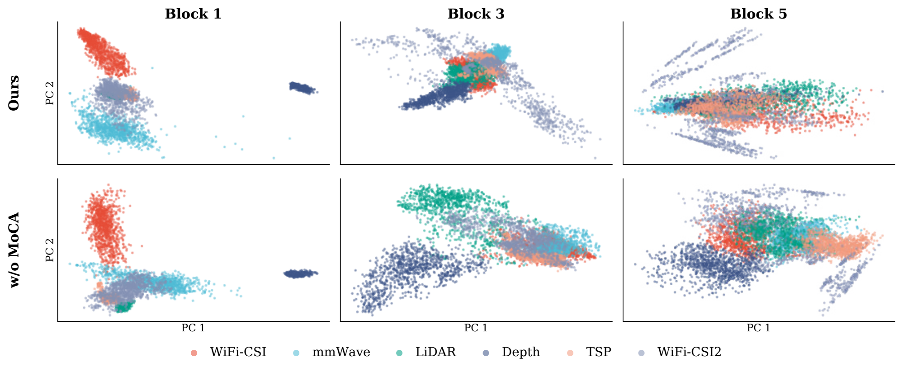

UniversalPose
A Unified Multi-Modal Framework for Human Pose Estimation
Demo Video
Interactive Comparison
Select a modality to compare UniversalPose predictions against modality-specific expert models.
Input Signal
Ground Truth
UniversalPose (Ours)
Expert Baseline
Model Architecture

Pipeline and Universal Encoder. All input signals are mapped into a shared representation space using modality-specific tokenizers and positional encoders, then processed by a single Universal Encoder with local attention and Modality Conditional Adaptation (MoCA) for adaptive modality alignment.
Experimental Results
Per-Modality Accuracy vs Expert Baselines
A single jointly-trained UniversalPose matches or surpasses specialized expert models across all six modalities. Best scores in green (lower is better).

Modality-Fusion Comparison vs X-Fi
With synchronized signals, the same UniversalPose architecture is trained for fusion via simple token concatenation — no fusion-specific branches. Best in green, second-best underlined. D = Depth, L = LiDAR, R = mmWave, W = WiFi (Sing).

Across every single- and multi-modal setting, Ours achieves the lowest MPJPE versus the vanilla X-Fi backbone, with the largest gains on combinations that include LiDAR or WiFi where X-Fi's frozen modality-specific encoders struggle (e.g., L+W: 6.85 vs 16.0 cm). The full four-modality fusion (D+L+R+W) reaches 6.74 cm MPJPE — a 31% reduction over X-Fi's 9.76 cm — while remaining a single, modality-agnostic architecture.
Ablation Study
Ablation on the Universal Encoder (vs. OMNIVORE-style global attention), token-wise / token-pair-wise MoCA, and joint-training. PE = MPJPE.

Qualitative Results

Qualitative pose predictions across all six modalities under asynchronous joint training. Red: prediction. Blue: ground truth.
MoCA Feature Analysis

Intermediate feature visualization across Transformer blocks. Each scatter shows the first two principal components of features from six modalities (color-coded), at Block 1, Block 3, and Block 5 of our Universal Encoder. Comparing the two rows, MoCA progressively aligns features from different modalities into a shared "human pose" representation as depth increases, while the inter-modality gap persists when MoCA is removed.
Ours (with MoCA)
Modality-specific clusters at Block 1 are progressively merged through Blocks 3 and 5, indicating that MoCA reconciles structural and statistical heterogeneity into a shared latent manifold that supports cross-modal knowledge transfer.
w/o MoCA
Without MoCA, features from different modalities remain visibly clustered even at deeper blocks, leading to a residual inter-modality gap that is consistent with the accuracy drops observed in the ablation study.